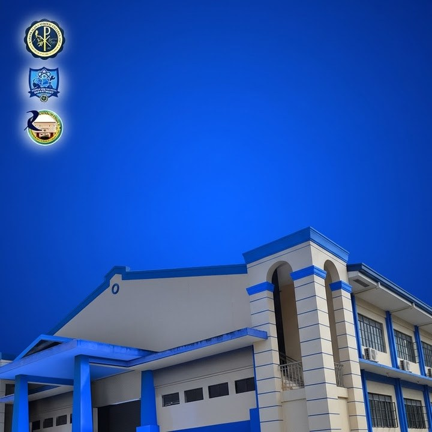
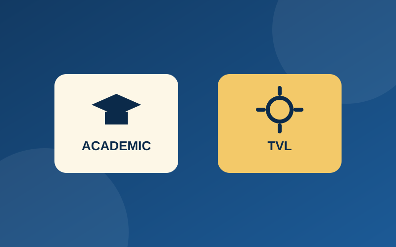

Since 1927 • Kabankalan City, Negros Occidental
Kabankalan Catholic College, Inc.
An educative and evangelizing community committed to quality education and holistic formation, with a preferential option for the poor.


About KCC
Faith, learning and service for almost a century
Kabankalan Catholic College began in 1927 as the Kabankalan Institute and was later renamed the Kabankalan Private Academy. By 1953 the Columban Fathers were administering the school, and over the years bishops, lay leaders and religious congregations such as the St. Paul Sisters of Chartres, the Religious of the Good Shepherd and the Carmelite Sisters of Our Lady have helped it grow.
- Catholic education from kindergarten to college.
- Senior High School in the Academic and Technical-Vocational-Livelihood tracks.
- Formation guided by ten core values, from love and integrity to humility.
Years of Service
College Programs
Senior High Tracks
Core Values
Who We Are
Vision, Mission and Formation
Our Vision
The Kabankalan Catholic College is an educative and evangelizing community, fostering the values of love, life, justice, and care for creation, an agent of societal transmission and builder of God's kingdom.
Our Mission
The KCC exist to provide quality education and holistic formation to the youth of Diocese, having a preferential option for the poor, in a Christ-centered environment that cultivates academic excellence and continues learning.
Faith
Rooted in the Catholic faith and nourished by prayer and the sacraments.
Excellence
Competence and integrity in every subject, skill and field of study.
Service
A preferential option for the poor, lived out in the community.
Academics
Learning Levels at KCC
Basic Education
Kindergarten to High School
Strong foundations in faith, character and learning, from the first years of school through high school.

Senior High School
Choose Your Track
Two tracks that prepare learners for college, skilled work and livelihood, with selected strands.
College
Degree Programs
Programs in the humanities, education, business and technology that form competent and caring professionals.
College
Degree Programs and Technical Training
Language Studies
Communication, literature and languages.
Philosophy
Critical thinking and the search for truth.
Psychology
Understanding the human mind and behavior.
Teacher Education
Forming teachers who serve and inspire.
Accountancy
Accuracy, ethics and financial stewardship.
Business Administration
Management, enterprise and leadership.
Information Technology
Software, systems and digital skills.
KCC Technological Center
Technical training based in Barangay Talubangi.
The KCCian
Ten Core Values
Love
Integrity
Faith and Prayer
Excellence and Competence
Cleanliness
Industry
Honesty
Respect
Humility
Preferential Option for the Poor
Our Story
A Journey Since 1927
A school is founded
The school begins as the Kabankalan Institute and is later renamed the Kabankalan Private Academy.
Columban Fathers take the lead
By 1953 the Columban Fathers are administering the school, with the support of bishops, lay leaders and religious sisters.
Elementary and college open
About ten years after the Columbans took over, the elementary and college departments open.
KCC Technological Center
The KCC Technological Center is established in Barangay Talubangi.
Kindergarten to college
KCC serves learners from kindergarten through college, with Academic and TVL tracks in Senior High School.
Be part of the KCC family
Learn, grow and serve in a community built on faith and excellence.
Plan Your VisitContact
Visit Kabankalan Catholic College
Location
Kabankalan City, Negros Occidental, Philippines
Admissions
For enrollment requirements, schedules and fees, please coordinate with the school's admissions or registrar's office.
Announcements
Follow the school's official channels for the latest news and advisories.